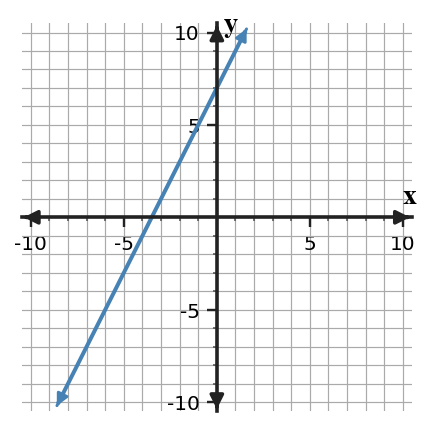
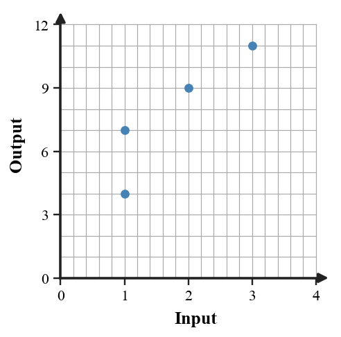

Mathematical idea: A function is a relationship where each input has one output, even if different inputs share the same output.
Today you will evaluate function rules from equations, tables, graphs, and contexts. You will also decide whether a relation behaves like a function by checking repeated inputs.
Learning Target: Students will interpret functions as rules that connect inputs and outputs without relying on formal domain and range language.
I can statements
This is a long-range preview for future lessons. Do not solve it today. Instead, annotate it individually. Circle anything familiar, underline symbols or directions that seem important, and write notes about what information you think will be needed later.
As you annotate, ask yourself: What parts (words, symbols, graphs) do you KNOW? What parts look FAMILIAR? What parts look like jibberish?
A table for an input-output rule is flawed: $(0,3),(1,6),(2,9),(2,12),(3,12)$. Revise the relation in two different ways: one revision that makes it a function with a constant increase, and one revision that makes it a function but not a constant-increase rule. Explain both choices.
Directions
Read the introduction aloud with a partner or in a small group. As you read, annotate the text by highlighting important ideas, circling key vocabulary, and writing short notes about connections, questions, or predictions in the margins.
A function rule takes an input and produces an output. Function notation such as $f(3)$ means use 3 as the input and find the matching output.
Rules can appear as equations, tables, graphs, mapping diagrams, or contexts. In every representation, the input is the value you start with and the output is the result the rule produces.
A relation is a function when each input has exactly one output. If the same input is paired with two different outputs, the relation is not a function.
Different inputs are allowed to have the same output. For example, two students can earn the same score. The function question is whether one input tries to go to more than one output.
Contexts help the symbols make sense. If $f(h)$ gives the cost after $h$ hours, then $f(4)$ is not just a calculation; it is the cost after 4 hours.
Stop and Discuss
Function notation names the input. For $f(x)=2x+7$, $f(3)$ means substitute 3 for $x$.
$$f(3)=2(3)+7=13$$| $x$ | 0 | 1 | 2 | 3 |
|---|---|---|---|---|
| $f(x)$ | 7 | 9 | 11 | 13 |

Context: If $x$ is hours and $f(x)$ is dollars, then $f(3)=13$ means 3 hours costs 13 dollars.
For $f(x)=4x-1$, find $f(5)$.
For $f(x)=3x+8$, find $f(4)$.
Stop and Discuss
A relation is a function if no input is paired with two different outputs.
| Relation | Pairs | Function? | Evidence |
|---|---|---|---|
| A | $(1,4),(2,6),(3,8)$ | Yes | no repeated input |
| B | $(1,4),(1,7),(2,9)$ | No | input 1 has two outputs |

Context: One locker number cannot belong to two different students in the same assignment rule.
For $g(x)=\frac{12}{x+1}$, find $g(2)$, $g(5)$, and the value of $x$ that makes $g(x)=3$.
For $h(x)=\frac{20}{x-1}$, find $h(3)$, $h(6)$, and the value of $x$ that makes $h(x)=4$.
Stop and Discuss
Sometimes the output is known and the input is missing. Set the function rule equal to the output and solve.
$$g(x)=3x-5$$ $$3x-5=16$$ $$3x=21$$ $$x=7$$| $x$ | 5 | 6 | 7 | 8 |
|---|---|---|---|---|
| $g(x)$ | 10 | 13 | 16 | 19 |
Context: If $g(x)$ is total points, the input 7 is the number of rounds needed to reach 16 points.
Use the table to decide whether the relation is a function.
| Input | 0 | 1 | 2 | 2 | 4 |
|---|---|---|---|---|---|
| Output | 5 | 7 | 9 | 12 | 13 |
Use the table to decide whether the relation is a function.
| Input | -1 | 0 | 1 | 3 | 3 |
|---|---|---|---|---|---|
| Output | 2 | 4 | 6 | 8 | 8 |
Stop and Discuss
A mapping shows $1\to4$, $2\to4$, $3\to6$, and $4\to8$.
Student claim: "This is not a function because two inputs have output 4."
A mapping shows $0\to5$, $1\to7$, $1\to9$, and $2\to11$.
Student claim: "This is a function because the outputs keep increasing."
Stop and Discuss
A function rule connects each input to exactly one output. Function notation tells which input to use.
Function values can be found from equations, tables, graphs, or contexts. Evaluating means starting with the input; solving for an input means starting with the output.
A common error is thinking repeated outputs break the function rule. The real issue is one input having two different outputs.
Strong understanding means you can calculate outputs, find missing inputs, and justify whether a relation is a function using evidence.
Look back at the future task. Do not solve it yet. Highlight one part that makes more sense now than it did at the beginning. Circle one part that still feels unfamiliar. Write one sentence about what representation you would look at first.
For $f(x)=2x+7$, find $f(3)$.
For $f(x)=\frac{6}{2x-3}$, find $f(1)$, $f(0)$, and the value of $x$ that makes $f(x)=4$.
What is one idea about inputs, outputs, and functions you understand better now than at the start of class? Write at least one complete sentence.
What is one thing about inputs, outputs, and functions you still want to understand or practice? Be specific — name the idea, not just "everything."